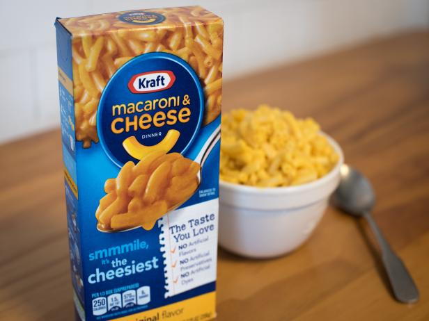

Kraft Dinner

A typical wednesday night dinner!
What comes after taco tuesday? Well mac and cheese wednesdays of course. A staple in any weekly meal plan and
family pantry is of course this delicacy right here. It of course also has to be the kraft brand, any other mac
and cheese brand is not acceptable as you will not get the same delicious results!
Now let's move onto the recipe
Ingredients
- One box of Kraft dinner
- Margarine (NOT butter)
- Almond milk (or regular if you aren't of the lactose variety)
- Water
Steps
- Our first step is going to be grabbing a big enough pot and filling it with water and putting it on the
top. We're going to crank the heat to the highest setting and then we're going to walk away and go
do something else for 5-10 minutes
- Once our water is boiling we're going open that box up and dump the macaronies into the pot and turn down the
heat a little. Stirring ocassionally so our macoronies don't get stuck to the bottom of the pot. In about
10 minutes we're going to test a macaroni to see if it is done enough. If it is; move on to step 3, otherwise
check again in a few minutes.
- We're going to drain the macaroni and water out of the pot and then put the macaroni back nto the pot and
put it on the stove top with the temp set to low.
- Grabbing our margarine, almond milk and the cheese packet. We're going to throw a heaping spoonful of
margarine into the pot and stir it a bit. Then open the cheese packet and dump it in and just before mixing
that in, dump in some milk. There's no good answer to how much milk to add as it is a matter of preference.
If you like soupy mac and cheese, who am I to judge? Dump that carton of milk in!
And there we have it, a gourmet meal for one!